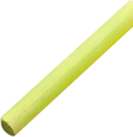

Коллектив соавторов Курсов написал учебно-методический комплект ENGLISHLAND для детей школьного возраста.
Englishland (Инглишлэнд)- позволяет научить детей по принципу от «простого к сложному», у детей нет стресса, а наоборот появляется уверенность в себе и сразу же возникает желание изучать английский язык. Ученики успешно справляются с программой курсов и школы самостоятельно и им не нужна помощь родителей! Оценка по английскому в школе становиться выше. Это явление можно объяснить тем, что весь изученный материал на курсах усваивается полностью. Постепенно ученики курсов становятся дисциплинированными, организованными и способными к самостоятельному обучению.
Программа обучения